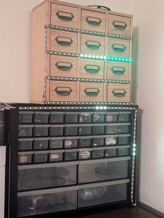
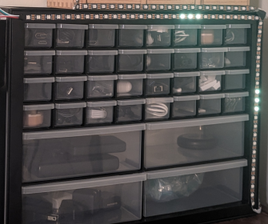
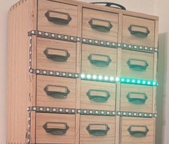
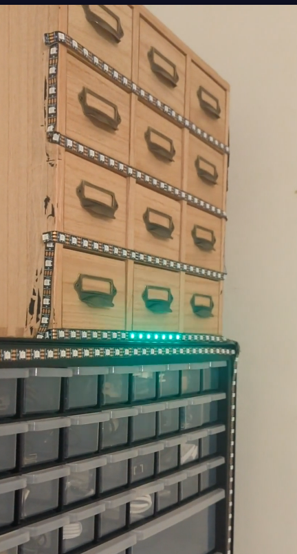
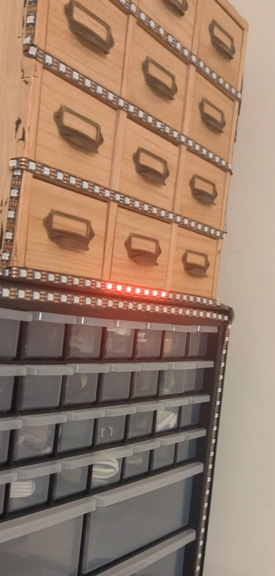
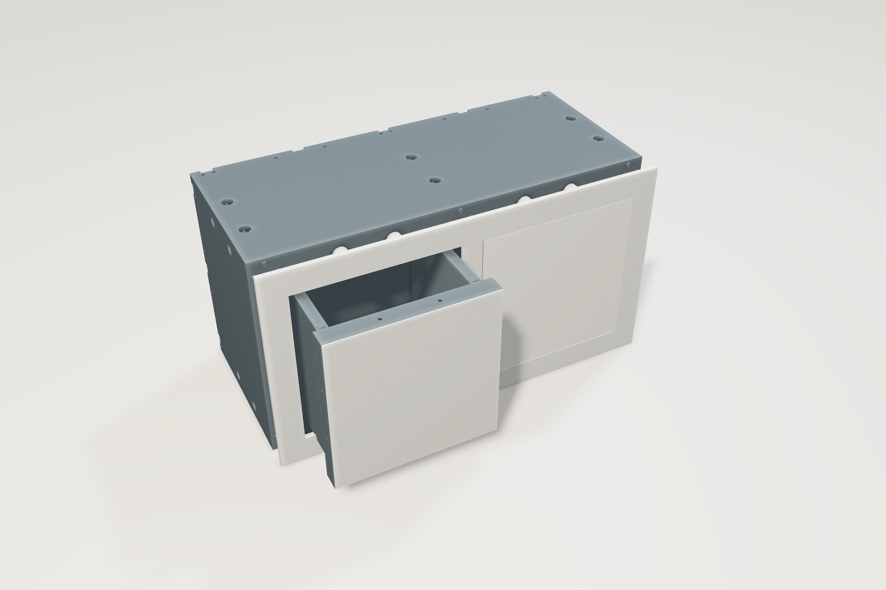

What Is Storadex?
Storadex is a smart storage system, which is controllable via voice, and allows you to access all your items via LED lights, removing the mental overhead of organization.

If you are losing little stuff all the time within your workspace or home, because of the mental overhead and time spend associated with constantly organizing all of your projects, Storadex is a great way to make organization easier.
Who Is Behind Storadex?
I am Tommy McElroy, I am a student at UNCC, and I have been working on storadex on and off for a few years now. I have always struggled with keeping track of physical items, and so Storadex has been of huge help to me.
If you like this project, you should check out my GitHub!
When Was Storadex Created?
Storadex started as Container, in 2024. Storadex is not yet available, but Container can be used by you, today! It takes around 10 minutes to set up on a existing drawer system, and only needs some minimal amount of linux knowledge. If you have a 3d printer, the print time depends on the scale of your drawers, and speed of your printer, but I was able to print a full drawer out in an evening.

You can expect the full version of Storadex to release within the coming months!
Where Can You Use Storadex?
The Storadex storage system can be used with any drawer system that has space for LED lights to be added, whether that be in a grid formation, or per drawer. You can also make your own storage system, via 3d printing.
Here is an example of using the grid setup on a plastic drawer setup from amazon

As you can see, the grid is lighting up the x and y position of the item you are looking for. this does limit it's ability to return multiple items in a readable fashion, though, which is why the per drawer lighting setup is preferable
Here is an example of using the per drawer lighting setup with a card catalog from amazon

As you can see here, we have lights below each drawer, and when you search for an item, you can immediately see where the item is. If you already own drawers iwth a lip like this below them, that you can attach LED lights too, then this works great!
How Can You Use Storadex?
Once the code is released, you will be able to go to this repository to find setup instructions. There will be a docker container based installation method, and a installer script for installing natively.
For now, you can use container, the project I made for the same purpose before storadex, for all your storage needs.
Why Storadex?
Storadex solves the problem that has always stopped me from getting my stuff organized. Friction. If I have an item in my hands, and I need to put it away, I will walk up to the drawers, and think "where does this go?", and then i'll consider a few options. Does a usb power blocker belong with the raspberry pi stuff, because I only use it with raspberry pis? Or does a usb power blocker belong with the usb adapters, because it is one? Or does it belong with the power adapters, because it strips power from a cable? Or does it belong with the usb hubs? If I have to consider all of that, I am just going to leave the thing on the nearest ledge, and deal with it later. In reality, I won't even deal with it later, it will just stay on that ledge. Storadex solves this by handling those choices for me.

I say "storadex add usb power blocker", and it lights up green where it wants me to put the usb power blocker, and then I do not think about it anymore. I will not remember that location, and I am not supposed to.

Later, when I need my usb power blocker, I can just walk up and say "storadex remove usb power blocker", and it will light up in red where it should be removed from.

AI Prompts
AI was used to assist with the creation of the javascript for the navbar, taking me from a basic nonfunctional concept, to a working implementation. It was also used in the rendering of my 3d models of into this nice demo image, for the favicon, and for the How Page's comparison between Container and Storadex

The prompt for that code, sent to gemini 3.8 flash, was:
i have a nav and a page with many headers and i want to turn it into an spa where you can click any of the nav links and it will change the page via javascript to just show that section. each section has its own id.
<nav>
<a href="#What">What</a>
<a href="#Who">Who</a>
<a href="#When">When</a>
<a href="#Where">Where</a>
<a href="#How">How</a>
<a href="#Why">Why</a>
<a href="#AIPrompts">AI Prompts</a>
</nav>
How should the javascript work for that? this is what i have sofar:
<script>
navLinks = document.querySelectorAll("nav a");
sections = document.querySelectorAll("section");
navLinks.forEach(function(link){
link.addEventListener("click", function(event) {
for (i = 0; i < sections.length(); i++){
sections[i].style.display = "none";
}
event.preventDefault();
sectionId = link.getAttribute("id");
sectionId.style.display = "";
}
}
</script>